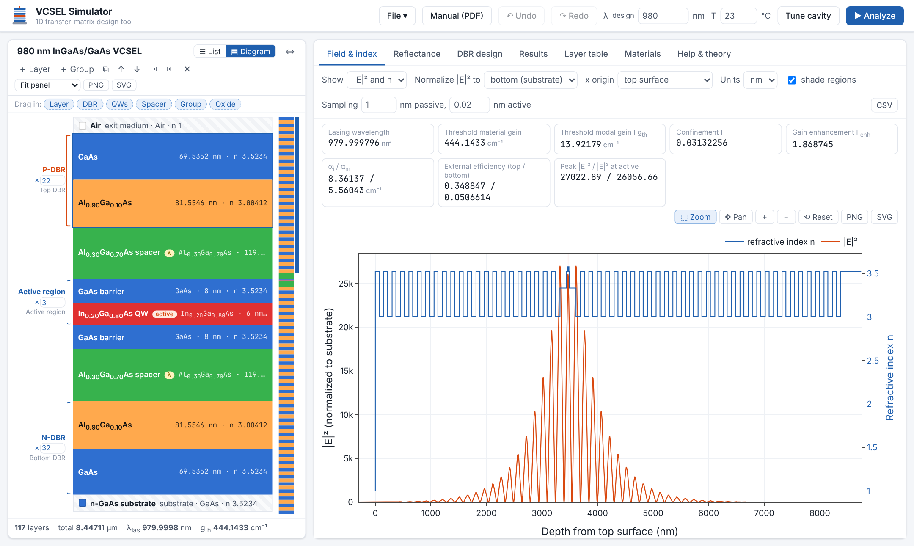
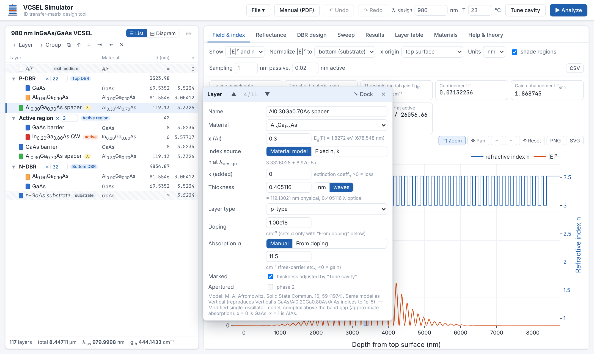
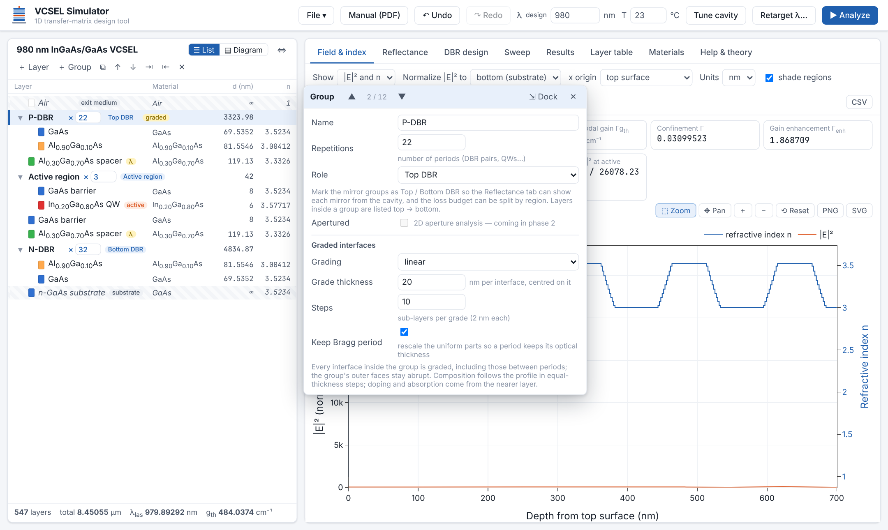
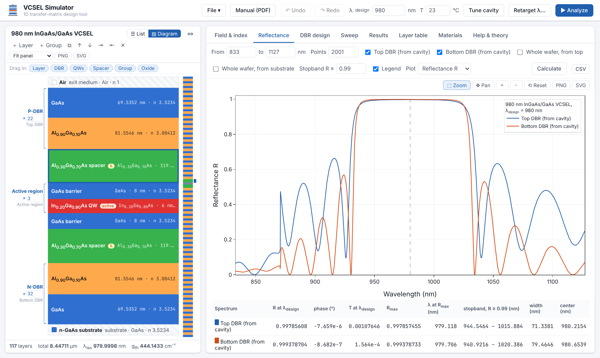
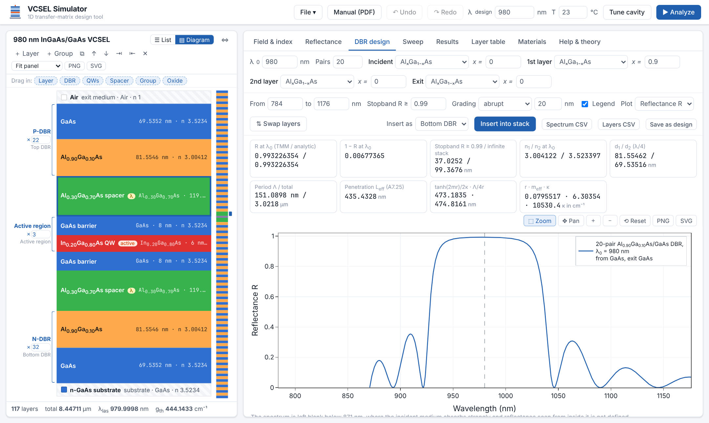
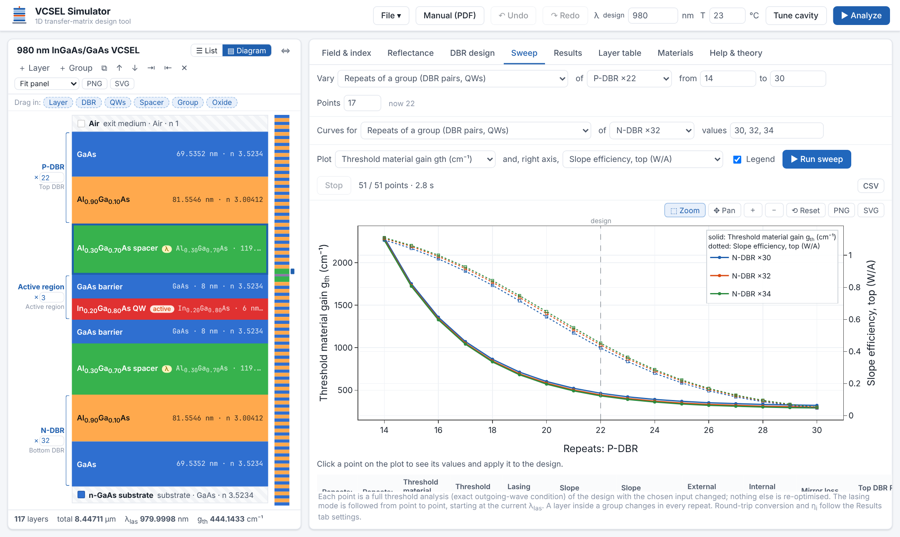
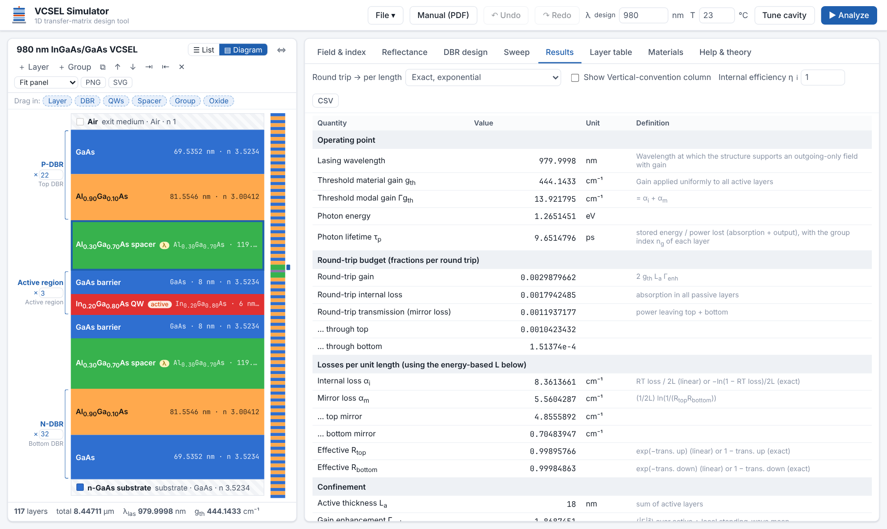
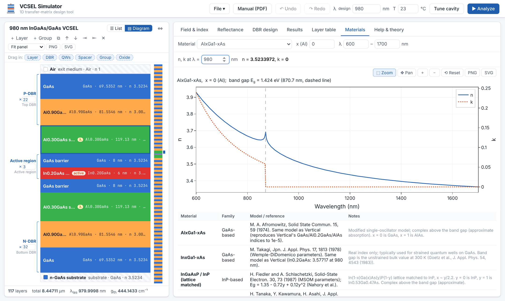

This is a draft for Phase 1 (one-dimensional analysis). Lateral effects (oxide apertures, diffraction loss, transverse modes) are planned for Phase 2 and will be added to both parts of this manual.
How to build a VCSEL layer structure, run the analysis, read the results, and move designs in and out of the tool.
The VCSEL Simulator computes the optical properties of a planar VCSEL (or any thin-film stack) at normal incidence using the transfer-matrix method. It is a modern replacement for the program Vertical and runs entirely in the web browser: the numerical engine is written in Python (numpy) and is executed in the browser through Pyodide, so nothing is installed and no data leave the computer. The same engine can be imported in Python or Jupyter.
For a given structure it calculates:
Designs can be saved and reopened, imported from and exported to Vertical .vrt files, and every plot and table can be exported (PNG/SVG figures, CSV data).

| Control | Function |
|---|---|
| File ▾ | New empty design, templates, open a design (.vcsel.json) or Vertical .vrt file, save, save for the old Vertical, CSV exports. |
| Manual | Opens this manual in a new tab. |
| ↶ Undo / ↷ Redo | Step backward and forward through changes to the design (layers, groups, materials, thicknesses, design wavelength, temperature). Keyboard: Ctrl+Z and Ctrl+Y (or Ctrl+Shift+Z) when the cursor is not in a text box. Up to 200 steps. |
| λdesign | Design wavelength (nm, 100–20000). Layers whose thickness is given in waves are quarter-wave (etc.) at this wavelength, and indices shown in the editor are evaluated here. |
| T | Structure temperature (°C, above −273.15), used by temperature-dependent materials (currently AlGaAs, Gehrsitz model). Outside 200–500 K a note says the results are extrapolated. |
| Tune cavity | Scales the thickness of all layers ticked Marked by a common factor so that the cold-cavity resonance falls exactly on λdesign (Vertical's “Marks / Force Wave”). If no layer is marked, the cavity spacers (the non-active layers between the two mirrors) are used. A layer may be scaled between 2% and 10× of its thickness; if no value in that range reaches λdesign the design is left unchanged and a message says so. |
| Center wells | Slides the quantum wells onto a peak of the standing wave while keeping the cavity resonant at λdesign. Mark one layer above the wells (for example the p-side spacer) and one below them (the n-side spacer). The upper layer is scaled to move the wells along the standing wave (searched over one period, λ/2n, to maximise Γenh), and after each step the lower layer is re-tuned so the cold-cavity resonance stays on λdesign. Use it after adding or changing a layer on one side of the wells, such as an electron-blocking layer; Tune cavity alone restores the resonance but not the well position. If the upper layer reaches its minimum thickness, mark a thicker layer above the wells. Undo reverts it. |
| Retarget λ… | Moves the whole design to another wavelength, with a preview of the threshold change and a check for absorbing layers (Section 3.6). |
| ▶ Analyze | Runs the full threshold analysis (Ctrl+Enter). The analysis also re-runs automatically after every edit, and a design restored from the last session is analysed when the page opens. |
While the engine computes (an analysis takes about half a second, a set of spectra one to two seconds) a Computing… badge shows at the top of the window. Every number box checks its entry: a blank, non-numeric or out-of-range value is refused with a message saying what is allowed, and the box returns to the value in use. Messages stay until clicked, or for about 10 s.
The left panel shows the structure from the exit medium (top, usually air) down to the substrate. Both are semi-infinite. There are two views:
The toolbar above the stack adds a layer or group below the selection, duplicates, moves up or down, indents into the group above, outdents, and deletes. The footer gives the number of layers (with repeats expanded), the total thickness, λlas and gth.
Clicking a layer opens its editor (Figure 2). ▲ ▼ or Alt+arrow keys step through layers; Dock fixes the editor below the stack instead of a pop-up.

Every plot has a bar above it with Zoom (drag a box), Pan, + and −, Reset (back to the full view) and PNG / SVG export (PNG at 4× resolution). Double-clicking inside a plot does the same as Reset. Hovering shows the values under the cursor. Legends sit inside the plot, in the corner that covers the least of the curves; when every corner would hide part of a curve, as in the dense phase plots, the legend is placed below the plot instead. Plots with a Legend box can have their legend turned off.
| Field | Meaning |
|---|---|
| Name | Free text shown in the stack and tables. |
| Material, x, y | Material from the database (Section 12) and its composition. The composition fields are labelled with their meaning, e.g. x (Al) for AlxGa1−xAs. The band gap at that composition is shown next to the field. |
| Index source | Material model (dispersive, from the database) or Fixed n, k (a constant index, e.g. a measured value). Layers imported from .vrt files are fixed at the values stored in the file. |
| k (added) | Extra extinction coefficient added to the model value (k > 0 is loss). |
| Thickness | In nm, or in waves = optical thickness n(λdesign)·d/λdesign, so 0.25 is a quarter-wave layer. Changing λdesign rescales layers given in waves; layers in nm stay fixed. The physical and optical thicknesses are shown below the field. |
| Layer type | undoped, n-type, p-type, active (gain), dielectric, oxide/aperture, metal, other. Only active changes the physics: the threshold gain is applied to all active layers. |
| Doping | cm⁻³. Used by the optional absorption-from-doping model (Section 13) and written to .vrt files. |
| Absorption α | Manual: a fixed α in cm⁻¹ (default; negative values are gain). From doping: α = σ·N with a literature cross-section σ, which can be overridden. Typing a doping into an n- or p-type layer whose material has a model switches the layer to From doping automatically. Active layers always use the manual value. |
| Marked | Thickness adjusted by Tune cavity. |
| Apertured | Reserved for the Phase 2 lateral analysis. |
A group is a block of layers repeated N times (edit the “×” box). Groups can be nested. DBRs and multi-quantum-well active regions are groups, so changing the number of mirror pairs or wells only means editing one number. Each group has a role:
The first and last rows of the stack. Each is a semi-infinite medium with a material or fixed index. Use Air (n = 1) for a real air interface. Older Vertical files sometimes store their top medium with a large imaginary index; on import the program keeps the stored value and warns about it.
Select a DBR group to open the group editor (Figure 3). Under Graded interfaces choose the profile (linear or bi-parabolic), the grade thickness per interface in nm, the number of sub-layers (steps) and whether to keep the Bragg period (default). Every interface inside the group, including those between periods, is graded; the group's outer faces stay abrupt. A graded group is tagged graded in the stack, and the index profile on the Field & index tab shows the ramps. Grading needs the same alloy model on both sides of an interface (for example two AlGaAs compositions). The method is described in Section 11.1.

A mirror designed on the DBR design tab can be added with Insert into stack. As Bottom DBR or Top DBR it replaces the stack's existing bottom or top mirror group (or is placed directly above the substrate / below the exit medium if there is none). The 1st layer is placed next to the cavity. Stand-alone mirrors are not inserted. Undo restores the previous stack.
Retarget λ… in the toolbar moves a finished design to a new wavelength, for example from 980 to 1000 nm. Every layer keeps its optical thickness in waves at the new wavelength, with the material dispersion included:
dnew = dold (λnew/λold) n(λold)/n(λnew)Layers already given in waves need no change; layers given in nm are rescaled. Compositions are not changed, and grading thicknesses scale with λnew/λold. By default the quantum wells (active layers) and metal layers keep their physical thickness, because their thickness is set by the gain and by opacity rather than by the optical path. The cavity is then re-tuned (marked layers, or the cavity spacers if none are marked) so the cold-cavity resonance falls exactly on λnew. Preview shows λlas, gth, Γgth, Γ and the top slope efficiency before and after; Apply changes the design (Undo reverts it).
The preview also checks every semiconductor layer against the photon energy E = hc/λnew:
Layers with absorption from doping (Section 13) are re-evaluated at the new wavelength automatically.
Plots |E(z)|² at the lasing wavelength and the refractive-index profile. Options: show |E|², n or both; normalize |E|² to the substrate, the exit medium or the peak; measure depth from the top surface or the substrate interface; nm or µm; shade regions (mirrors, cavity, active layers). The Sampling boxes only set how densely the curve is drawn. All integrals in the results are analytic and do not depend on the sampling. While the layer editor is open, the layer or group being edited is marked by a faint blue band on the plot (every repeat of it, for a layer inside a group), so its position in the field and index profile is easy to see. Summary cards above the plot give λlas, gth, Γgth, Γ, Γenh, αi and αm, the external efficiency (top and bottom), and the peak |E|² and |E|² at the active layers.

Choose the wavelength range, number of points and the spectra to compute:
The spectra recompute when the range, the number of points (51–20001) or the selection changes; a range entered high to low is swapped. Plot R, the phase of r, both, R on a log scale (to see how deep a cavity dip goes), 1 − R on a log scale, or T. The wavelength grid is refined automatically: around the cavity resonance (±8 linewidths) and at every reflectance minimum the spectrum is sampled finely enough to give the dip its true depth and wavelength, even when the dip is far narrower than the grid step, so the exported CSV has a non-uniform wavelength column. The legend is headed by the design name and λdesign and is placed as described in Section 2.4. The spectra are for the passive, as-grown structure: the active layers carry no gain, so there is no lasing spike. The table gives, for each spectrum, R, phase and T at λdesign, Rmax and its wavelength, and the stopband: the continuous band with R ≥ 99% (the threshold can be changed) around λdesign, with its width and center. For whole-wafer spectra the narrow cavity dip is bridged.

Designs a quarter-wave mirror on its own. First pick the Mirror viewpoint: Bottom DBR (from the cavity, looking down), Top DBR (from the cavity, looking up), or a stand-alone mirror lit from above or from below. For the two DBR choices the incident medium is the cavity layer next to the mirror (“Cavity side”) and the 1st layer is the one that touches the cavity; the drawing shows the mirror as it sits in the stack (a top DBR has the cavity side at the bottom), and Insert into stack keeps the 1st layer next to the cavity on either side. The stand-alone choices are for a mirror used as its own optical element (filter, coating); they cannot be inserted into the stack, but Save as design keeps them as a file. The viewpoint changes only the orientation, not R. Then set λ0, the number of pairs (1–500), the grading (abrupt, linear or bi-parabolic, with its thickness), the incident medium, the first layer (next to the incident medium), the second layer and the exit medium, each with its composition (“x =”, and “y =” for quaternaries such as InGaAsP with any x, y). ⇅ Swap layers exchanges the two layers. For a mirror seen from a GaAs cavity, use GaAs as the incident medium and put the low-index layer first.
The cards give R at λ0 (transfer matrix and the analytic formula), 1 − R, the stopband (R ≥ 99%, next to the infinite-stack width), the indices and quarter-wave thicknesses, the period and total thickness, and the penetration depth (Coldren & Corzine A7.25 and the Ch. 3 approximations). Below are the full spectrum (its legend, which can be turned off, names the design, e.g. “20-pair Al0.90Ga0.10As/GaAs DBR, λ0 = 980 nm, from GaAs, exit GaAs”), a table of pairs needed for target reflectances, a drawing of the mirror, and a plot of R (or 1 − R, log) versus the number of pairs. If the incident medium absorbs strongly in part of the range (GaAs below about 870 nm), the spectrum is left blank there and a note under the plot gives the wavelength. The mirror can be exported as a spectrum CSV, a layer CSV, saved as a design, or inserted into the stack.

Varies one design input over a range and runs the complete threshold analysis at every point, to find good designs quickly. The inputs are: the repeats of a group (DBR pairs, number of wells); a layer's thickness (in its own unit, nm or waves), composition x or y, manual absorption α or doping (swept on a log scale); the thickness scale of one group or of the whole stack in percent (a growth-rate error); the grading thickness of a DBR group; the temperature; and the design wavelength. A layer inside a group changes in every repeat. A doping sweep switches the layer to α from doping (Section 13), so the free-carrier absorption follows the doping; the layer must be n- or p-type. A temperature sweep only changes layers on a temperature-dependent model (AlGaAs, Gehrsitz); the sweep warns when there are none. Scaling a group or the whole stack also scales its grading thickness.
Curves for adds an optional second input with up to eight values, one curve each. Plot chooses the result on the left axis and, optionally, a second one on the right axis (dotted): threshold material or modal gain, λlas, slope and external efficiencies (top, bottom, total), αi, αm (total, top, bottom), the passive reflectance of each DBR (or 1 − R on a log axis), Γ, Γenh, photon lifetime, the physical cavity length, the Coldren effective cavity length (Lcav + both penetration depths), the energy length ΓenhLa/Γ, cavity optical thickness, the computed penetration depths and the total thickness. A dashed line marks the current design. The table lists the main results at every point and CSV exports all of them.
The lasing mode is followed continuously: the sweep starts at the point nearest the current design and walks outwards in both directions, starting the solver at the previous point's wavelength, so it stays on the same longitudinal mode. Points that do not converge are left blank and counted under the plot. Clicking a point shows its values and offers Apply to design, which rebuilds that point from the design the sweep started with (so pressing it twice does not scale twice) and makes it the current design; Undo reverts it. A layer named after its composition (e.g. “Al0.30Ga0.70As spacer”) is renamed when x or y is applied. Round-trip conversion and ηi follow the Results tab settings. Each point takes about as long as one analysis; Stop ends a long sweep early.
Normally nothing but the chosen input changes, so an input that alters the cavity (a spacer thickness, a composition, the temperature) also detunes the resonance from the mirrors' Bragg wavelength and the lasing wavelength drifts. Tick Re-tune to the design wavelength and pick the layer(s) to adjust (pre-selected: the layers marked for Tune cavity). After each change the chosen layers are scaled by one common factor so the cold cavity resonates at λdesign again, which separates the effect of the input from the detuning. The factor can be plotted (Re-tune factor), is listed in the table and CSV, and Apply to design also applies the re-tuned thicknesses. A layer cannot be varied and used for re-tuning at the same time; for example, sweep the top spacer and re-tune with the bottom one. Re-tuning takes a few cold-cavity solutions per point, so the sweep runs a few times slower.

The full results table, grouped as: operating point (λlas, gth, Γgth, photon energy, photon lifetime); round-trip budget; losses per unit length (αi, αm and their top/bottom parts, effective R); confinement (active thickness, Γenh, Γ, effective length, cavity length and cavity optical thickness); mirrors at λlas (periods, reflectance from the cavity and the computed penetration depth of each DBR, and the effective length they give); efficiency; standing-wave field values; internal loss by region; the transfer matrix at λlas; and, at the bottom, a collapsed hand-calculation cross-check section with the course-notes penetration-depth model. Definitions are in Part II.
Options: Round trip → per length chooses the exact (default) or linear (as Vertical) conversion from round-trip fractions to per-length losses (Section 9.3). Show Vertical-convention column adds Vertical's numerical rules for cross-checking old results (Section 14). Internal efficiency ηi enters the efficiency results.
Every layer with repeats expanded, top to bottom: material, composition (x, and y when a quaternary is used), type, thickness, depth, n, k, α, optical thickness n·d/λ, band gap and doping, at λdesign. Exportable as CSV.

Plots n and k of any material versus wavelength for a chosen composition, marks the band gap, and gives n, k and α = 4πk/λ at a wavelength typed in the n, k at λ box. The table lists the model and reference for every material.
A short summary of operation and method inside the program. This manual is the full reference.
| Item | Details |
|---|---|
| Templates | 980 nm InGaAs/GaAs VCSEL; 850 nm GaAs/AlGaAs VCSEL; the ECE 577 final project (imported from Vertical); a Ta2O5/SiO2 dielectric DBR. |
| Save / Open design | .vcsel.json: the complete design (layers, groups, options). The design is also kept in the browser between visits. |
| Where files go | In Chrome and Edge, Save and every export (CSV, .vrt, stack PNG/SVG) open a “Save as” dialog to choose the folder and file name; the dialog remembers the last folder. Firefox and Safari save to the browser’s download folder. Plot PNG/SVG buttons on the charts always download. |
Open Vertical .vrt | Reads old and new Vertical formats: layer tree, repetitions, indices, thicknesses, absorption, doping, layer types. Objects in Vertical's “Extra” area are ignored. Indices are fixed at the stored values; switch a layer to Material model to use the database. |
| Save for old Vertical | Writes a .vrt readable by the original program, with every layer at fixed n, k (and the effective α) at λdesign. Because dispersion is dropped, reopening such a file gives λlas and gth that differ slightly from the original design (for the 980 nm template, by 0.0002 nm and 0.0002 cm⁻¹). |
| CSV export | Layer structure, index profile, |E|² field, reflectance spectra, all results, inputs (JSON). The field and results exports need an active layer (a design without one, such as the dielectric DBR template, has no lasing mode). |
| Figures | PNG (4× resolution) or SVG from the bar above each plot; PNG/SVG drawings of the stack. |
The vcsel_sim package needs only numpy:
from vcsel_sim.vrt import read_vrt from vcsel_sim.laser import analyze, reflectance_spectrum s = read_vrt(open("design.vrt", "rb").read()) a = analyze(s); print(a.threshold_gain, a.wavelength)
What the simulator computes, the definitions it uses, the material data behind it, and where the model stops being valid.
The structure is a stack of homogeneous, isotropic, laterally infinite layers between two semi-infinite media. Light propagates along z at normal incidence. In layer j the field is
E(z) = Aj eikjz + Bj e−ikjz, kj = 2π ñj / λ, ñj = nj + iκjwith time dependence e−iωt, so κ > 0 is loss. An absorption coefficient α (cm⁻¹) enters as κ = αλ/4π; gain is α < 0. E and H = (1/iωμ0) dE/dz are continuous at every interface, which gives 2×2 characteristic matrices per layer. Integrals of |E|² over a layer are done in closed form, so no quantity depends on a sampling grid. The reported transfer matrix is the characteristic [E, H] matrix from the substrate to the top.
The same material gain g is applied to every active layer (α = −g). The program finds the real wavelength λ and gain g at which the structure supports a field with only outgoing waves in the exit medium and in the substrate, i.e. a pole of the transmission (Vertical's threshold condition). The search starts from the complex-wavelength resonance (quasi-normal mode) of the passive cavity and then uses a two-dimensional Newton iteration on (λ, g). The result is exact for the 1D structure; no small-loss or mirror-penetration approximation is involved.
At threshold, the power generated in the active layers equals the power absorbed in the passive layers plus the power leaving through the top and bottom. The local absorbed power density is p(z) = α n |E(z)|² and the power flux of a wave is n|A|². All terms are divided by the one-way power flux in the active layers, Pref = na(|A|² + |B|²)/2, which gives the round-trip fractions
RT gain = 2 gth La Γenh = RT internal loss + RT transmissiontop + RT transmissionbottomThe gain enhancement factor Γenh = ⟨|E|²⟩active / (|A|² + |B|²) is the overlap of the standing wave with the wells relative to the local mean; it is 2 for a thin well at an antinode and 0 at a node. The longitudinal confinement factor is the share of the mode's stored energy in the active layers. By default it uses the dispersive energy density (ε0/2) n ng|E|², the same one the photon lifetime uses, which makes it consistent with the rate equation dNp/dt = Γ vg g Np:
Γ = ∫active n ng|E|² dz / ∫stack n ng|E|² dzThe Γ weighting option on the Results tab switches to the non-dispersive form ∫n²|E|² (common in textbooks and Vertical), which differs by a few percent away from band edges (+4% for the 980 nm template) and by more near them (14% at 850 nm, where the GaAs layers are close to their gap). gth, λ, the efficiencies and the mirror reflectances do not depend on this choice; Γ, LE and the per-length αi, αm do. Γ also defines the energy length LE = Γenh La / Γ, the length that makes Γ = ΓenhLa/L exact. It is not the Coldren effective cavity length L = Lcav + Lpen,1 + Lpen,2 (Section 10), which the main table also lists, using the computed penetration depths. The two answer different questions: the Coldren length describes where hard mirrors would sit, and stays fixed when wells are added and the spacers re-tuned; LE follows the exact field, and grows by about 10% from 3 to 9 wells in the 980 nm template because Γenh is referenced to the local intensity in the wells, which changes when the active region extends into material of different index. The cavity length reported in the main table is the physical thickness of all layers between the Top DBR and Bottom DBR groups, and the cavity optical thickness is Σ nidi/λlas over the same layers (1.0 for a one-wavelength cavity).
The threshold gain is the material gain at which the quasi-normal mode nearest the design wavelength becomes real. For each trial gain the complex mode wavelength is found from the round-trip condition rup rdown = 1 at the top of the first active layer, with each mirror's reflection computed from its own exit medium inward (the numerically stable direction); the gain is then adjusted by a secant search until Im λ = 0. The field is built the same way, from the substrate up to that plane and from the exit medium down to it, so results stay accurate for mirrors of any reflectance (tested to 200 GaAs/AlGaAs pairs). Results that do not converge are not shown. A negative threshold gain (net gain without pumping) is flagged.
Before each analysis the design is checked: negative thicknesses or repeat counts, and a material model that is undefined at the wavelength, are errors; a composition or wavelength outside a model's fitted range gives a warning, because the index is then extrapolated.
The round-trip fractions are converted to losses per unit length with L = LE. Two conventions are available:
exact (default): αi = −ln(1 − RT loss)/2L, αm = (1/2L) ln[1/((1 − Tup)(1 − Tdown))], Rup/down = 1 − Tup/down linear (as Vertical and the course notes): αi = RT loss/2L, αm = RT transmission/2L, Rup/down = exp(−Tup/down)where Tup/down are the round-trip transmissions. In the linear form Γgth = αi + αm holds exactly; the two forms differ by terms of order RT/2, typically 0.1–0.5% for a VCSEL. The threshold gain itself is the same in both.
The external differential efficiency is ηd = ηi × RT transmission / RT gain, split into top and bottom by their transmissions; the slope efficiency is ηd hν/q (W/A). The photon lifetime is the stored energy, (ε0/2) ∫ n ng |E|² dz with the group index ng of each layer, divided by the power lost to absorption and output.
The collapsed hand-calculation cross-check section on the Results tab reproduces the textbook model used in the ECE 577 notes and Coldren & Corzine Appendix 7, so that hand calculations can be checked. The mirrors are replaced by hard walls at their penetration depths. For a quarter-wave stack of m periods with indices n1 < n2 and period Λ:
r = (n2 − n1)/(n2 + n1), meff = tanh[m ln(n2/n1)] / tanh[ln(n2/n1)], Leff = ½ meff Λ [1/(1 + r²) − 1/(2meff)](A7.25)measured from the first low-index layer (a high-index mirror layer touching the cavity is counted in the cavity). Then
L = Lcav + Leff,1 + Leff,2, Γ = Γenh La/L, χ = L neff/λ0from which the modal gain, ⟨αi⟩, αm, Rup and Rdown follow. A7.25 measures the delay at the mirror's average index n̄ = λ/2Λ; measured in the cavity medium it corresponds to a length shorter by n̄/ncav (about 9% for AlAs/GaAs next to GaAs). The depths computed by the simulator are taken from the actual reflection phase of each mirror, ½|dφ/dβ| with β = 2πncav/λ in the cavity layer next to the mirror; they need no quarter-wave assumption, include material dispersion (so they measure the group delay and are typically 10–15% longer than A7.25; for the 980 nm template 504 nm versus 436 nm, and 449 nm with dispersion removed), and are listed in the main Results table (Mirrors section) and again in this section, and the Ch. 3 approximations tanh(2mr)/2κ, Λ/4r and λ/4Δn.
Reflectance spectra are computed for the passive structure. “From cavity” spectra use the cavity layer next to the mirror as a lossless incident medium, with the phase referenced to the mirror interface. Whole-wafer spectra use the exit medium or the substrate as the incident medium; where that medium absorbs strongly (|Im ñ| ≥ 0.01|ñ|) the reflectance is undefined and left blank, and weak loss in the incident medium is ignored.
The stopband is the continuous band around λdesign (or around the peak if R(λdesign) is below the threshold) where R ≥ 99%, the usual VCSEL convention (top output mirrors need R ≈ 99.0–99.5%, bottom mirrors above 99.9%). Edges are interpolated between grid points. It is zero until the mirror reaches the threshold and widens with more pairs toward the infinite-stack width
Δλ∞ = (4λ0/π) arcsin[(n2 − n1)/(n2 + n1)]The half-of-peak (−3 dB) width, used earlier, behaves the opposite way: it shrinks with more pairs because a weak mirror has a broad, low peak. The analytic reflectance at λ0 on the DBR tab is R = [(n0 − Y)/(n0 + Y)]², Y = (n1/n2)2m nexit.
In a graded group every interface inside the group (between the layers of a period and between consecutive periods) is replaced by a composition ramp of total thickness tg, centred on the original interface, so each neighbouring layer gives up tg/2. The outer faces of the group stay abrupt. The ramp is divided into s equal sub-layers; sub-layer j (centre at u = (j − ½)/s) has composition
x = xA + (xB − xA) f(u), linear: f = u, bi-parabolic: f = 2u² (u < ½), 1 − 2(1 − u)² (u ≥ ½)(y is graded the same way for quaternaries), with its index from the material model at that composition, so the transfer matrix sees the actual staircase. Each sub-layer takes the doping, absorption and layer type of the nearer original layer. With Keep Bragg period the uniform parts of all layers are multiplied by one factor chosen so that a full interior period has the same optical thickness Σ n d at λdesign as without grading, which keeps the Bragg wavelength in place; without it the physical thicknesses are kept and the stopband moves slightly. Ten sub-layers per grade (2 nm for a 20 nm grade) are enough for the reflectance at the Bragg wavelength; the step size only needs to be small compared with λ/n.
Grading reduces the effective index contrast: for the 980 nm template with 20 nm linear grades in both mirrors, the top mirror's passive reflectance falls from 0.99786 to 0.99758 and gth rises from 444 to 494 cm⁻¹ (bi-parabolic grades of the same thickness: 468 cm⁻¹). A graded mirror therefore needs more pairs for the same reflectance; the sweep tab shows the trade-off directly. The analytic reflectance, the infinite-stack stopband and the Coldren penetration-depth formulas on the DBR design tab and in the hand-calculation section assume abrupt layers. The transfer-matrix values and the phase penetration depths include the grading. Grading is a layer profile only: the electrical benefit it is used for (lower heterobarriers and series resistance in p-DBRs) is outside this optical model. A graded group written to an old Vertical file is stored as explicit layers (first period, interior periods, last period).
Off-center Rmax. Inside the stopband the standing wave sits mainly in the low-index layers on the short-wavelength side and in the high-index layers on the long-wavelength side. If one of the two materials absorbs more (for example through doping), the absorption, and so 1 − R, is lowest on the side where the field avoids that material, and Rmax moves several nm off λ0. Because the stopband top is flat, R changes by only ~10⁻⁴. The laser locks to the cavity resonance, not to Rmax.
Indices are computed from published dispersion models or tabulated data at the layer's composition, λ and (where supported) temperature. Any layer can instead use a fixed n, k.
{{MATERIALS_TABLE}}For n- and p-type layers, Absorption α → From doping replaces the typed α with α = σ·N, where N is the layer's doping and σ the cross-section of electrons (n-type) or holes (p-type) for the material family at the design wavelength. σ can be overridden per layer. Manual α remains the default, and active layers always use the manual value.
| Family | Carrier | Cross-section and source |
|---|---|---|
| AlGaAs, InGaAs | n | 3×10⁻¹⁸ cm² (Casey 1978, eq. 9; GaAs near the gap, also applied to AlGaAs). |
| p | 7×10⁻¹⁸ cm² (Casey 1978). Other published pairs are 5/11×10⁻¹⁸ (see Debernardi et al. 2019). | |
| InP, InGaAsP, InAlGaAs | n | Walukiewicz et al. (1980), Table III (n-InP, 300 K, 10 µm, uncompensated): optical-phonon, ionized-impurity and acoustic-phonon parts scaled to λ as λ2.5, λ3.5, λ1.5 (their eq. 2). σ depends on N: ≈0.7×10⁻¹⁸ cm² at 1.55 µm and 10¹⁸ cm⁻³. |
| p | Intervalence-band absorption: 14×10⁻¹⁸ at 1.3 µm, 20×10⁻¹⁸ at 1.5 µm (Casey & Carter 1984), 25×10⁻¹⁸ at 1.6 µm (Henry et al. 1983, same in InP, InGaAs and GaAs), linear in between, constant outside. | |
| AlGaInP | n | Estimate: linear in x/0.51 between the GaAs value 3×10⁻¹⁸(λ/870 nm)² (x = 0) and n-GaP (x = 0.51, AlInP) from Spitzer et al. (1959), ≈40 cm⁻¹ per 10¹⁸ at 1.2 µm scaling as λ1.56, extrapolated below 1.2 µm. Indirect (X-valley) electrons absorb more than in GaAs. |
| p | Estimate: 7×10⁻¹⁸(λ/870 nm)² (GaAs value). | |
| GaN, AlGaN, InGaN, AlInN, AlN | n | Phonon-assisted cross-section of Kioupakis, Rinke & Van de Walle (2010), Table I fit, 380–680 nm, E ⊥ c; ≈0.6×10⁻¹⁸ cm² at 450 nm, matching Pimputkar et al. (2015). |
| p (Mg) | Most of the loss is absorption by holes bound to activated Mg acceptors, so N is the Mg concentration. Default: ≈1×10⁻¹⁷ cm² per Mg atom, measured (Sizov, Bhat & Zah 2013) on annealed layers whose Mg is activated (hydrogen removed) but mostly un-ionized, so it multiplies the Mg concentration, not the hole density; the value was extracted from whole laser structures including InGaN and AlGaN layers. Option: first-principles free + bound holes (Kioupakis 2010, ≈0.9×10⁻¹⁸ at 450 nm). The alloys (including AlInN) use the GaN cross-sections; no alloy measurements were found, so this is an estimate. |
For the ECE 577 final-project structure imported directly from its .vrt file, the simulator gives the same threshold gain and lasing wavelength as Vertical (2111.42 cm⁻¹ at 980.000 nm, with the file's stored top medium) and the transfer matrix agrees to 5–6 digits. The 980 nm template written with Save for old Vertical and run in Vertical gives gth = 444.143 cm⁻¹, identical to this program. GaN structures (405 nm, 369 nm and a tunnel-junction InGaN design) agree to 0.2–0.5% in gth.
Vertical evaluates some quantities with simple numerical rules, which the Vertical convention column reproduces (to about 0.1%):
The main Value column is the exact energy balance and should be used for new designs.
Independently of Vertical, the engine is checked against exact closed-form results on every test run (tests/test_benchmarks.py), and python -m vcsel_sim.verify runs a stand-alone set of transfer-matrix checks and prints a pass/fail table. They cover: R + T = 1 for lossless stacks (to about 10⁻¹⁴), the Airy formula for lossless and absorbing etalons, the quarter-wave DBR reflectance ((1 − (nH/nL)2Nns/n0)/(1 + …))2 and the stopband width, the zero-reflectance resonance of a symmetric λ or λ/2 cavity exactly at λB with the |E|² antinode on the well, the exact threshold of a uniform gain slab, the photon lifetime n/(c gth), the energy balance, and the standing-wave enhancement 1 ± sin(kd)/(kd). All agree to between 10⁻¹⁶ and 10⁻⁹.